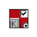

|  |
GUI Builder User Guide |
 |
|
The GUI Builder is an application used to create user interfaces. The GUI
Builder contains many of the standard user interface widgets, such as dialog boxes containing radio buttons and check boxes. After you create the interface, the GUI Builder will
generate the code and place it in the Komodo Editor Pane.
You will be prompted to provide a name for the project file. This project
file has the extension ".ui", and will be automatically added to the Komodo
Project or to the Toolbox, depending on where the dialog command
was invoked.
Next, you will be prompted to specify the target language. When code is
generated by the GUI Builder and displayed in the Komodo Editor Pane,
it will be generated in the language specified here.
Top
Dialog projects can be added to a project in the
Project Manager, or to
the Toolbox. In the Project
Manager, right-click the project name or a folder within a project and select
Add New Dialog. Alternatively, from the menu, select
Project|Add to Project|Add New Dialog. In the Toolbox,
right-click in an empty area within the Toolbox Pane, or right-click a folder, and select Add New Dialog.
When you invoke the GUI Builder, you will be prompted for the following
information:
- Specify Dialog Project File: the files related to the
dialog are stored in a project file with a ".ui" extension.
- Specify Output Language: the GUI Builder can generate
code in several languages and language versions:
- Tcl/Tk (8.3)
- Tcl/Tk (8.4)
- Perl/Tk (8.0)
- Python/Tkinter (8.3)
After specifying the options described above, the GUI Builder will load.
When you save a new dialog in the GUI Builder, the following items will be
created in either the Toolbox
or the Project Manager
(depending on where the Add New Dialog command was invoked):
- Dialog.ui Project File: the name you specified
for the dialog will be suffixed with ".ui. This dialog project file will
contain two files:
- Dialog.language: edit this file to add
functionality to widgets.
- Dialog_ui.language: this file is automatically
generated by the GUI Builder, and should not be modified.
Top
Quick Overview
- Add rows and columns by double-clicking grid lines.
- Resize cells by dragging the grid lines.
- Drag and drop widgets from the Widget Palette to a cell in the workspace.
- Double-click widgets in the workspace to configure their properties.
- Click the green arrow on the Toolbar to test the interface.
- Save the GUI to create the files in Komodo.
Top
The Workspace is used to design the GUI. This section discusses manipulation
of the workspace grid; see Widgets for a description
of adding, deleting and configuring widgets.
The selected cell is indicated by the column and row handles at the top
and the left of the workspace. When a cell is selected, the
column and row handles are displayed in blue. When a single column or row handle
is selected, it will be displayed in red. Use the
Application Preferences to set color and
size preferences for the workspace.
Usage
- Add a Row or Column: click on a grid line and press the
Insert key. Alternatively, double-click the grid line.
- Add a Row and Column: click in a grid cell and press the
Insert key.
- Select a Row or Column: click on a grid line. The grid
line will change color according to the Selection Color
setting in the Preferences.
- Select a Row and Column: click in a grid cell. The
column and row handles will change color according to the
Selection Color setting in the
Preferences.
- Delete a Row or Column: click on a grid line and press the
Delete key. Rows and columns cannot be deleted if they
contain a widget.
- Delete a Row and Column: click in a grid cell and press the
Delete key. Rows and columns cannot be deleted if they
contain a widget.
- Configure Row and Column Size, Weight and Widget Padding:
click in a grid cell and select Edit|Row & Column
Properties. Use this dialog to change size, weight and padding
around widgets.
- Resize Row or Column: click and drag a grid line.
Top
The toolbar contains buttons for the most common widget configuration
options. Select the widget in the grid before changing widget properties.
From left to right, the tools are:
|
Save file |
|
Widget text |
 |
Widget text size |
|
Widget text bold and italic |
|
Widget text alignment |
|
Widget foreground and background color |
|
Widget position in cell |
|
Widget border and relief |
|
Widget orientation (for the scrollbar widget) |
|
Widget delete |
|
Run or stop running interface |
Top
|
Usage
- Drag widgets from the palette to a cell in the workspace.
- Use the toolbar buttons to
configure basic properties.
- Double-click widgets in the workspace
to configure advanced properties.
- Double-click widgets in Widget Palette to set default properties.
- To span rows or columns, point the mouse at the edge of
the widget and drag the widget resize handle when the mouse pointer
changes (grid lines spanned by the widget will disappear).
- To make widgets resizable, click the column or row handle once to
select, then again to toggle the resizable setting. When the arrows on
the handle point outwards, the widget will be resizable. Note that this
characteristic only has an effect if the widget is configured to adhere
to two (or four) sides of the cell. (The scrollbar widget is resizable
by default.)
- To attach scrollbars to widgets, first insert the desired widget and
scrollbar in the workspace. Then select the widget, and select
Commands|Attach Scrollbars. You will be prompted to
specify which scrollbars you wish to attach. Scrollbars can only be
attached to scrollable widgets.
|
Top
Properties vary according to the selected target language. Refer to the
Language tab in the GUI Builder Properties (Edit|Preferences)
to view the selected target language.
- To change the properties of an individual widget, double click the
widget in the workspace.
- To change the default properties for a widget, double click the widget
in the Widget Palette.
Property Reference
Top
Usage
- Help messages are displayed if Show Statusbar Help is
checked in the Preferences (Edit|Preferences).
- Help messages are displayed for the object under the current cursor
position.
- The status bar displays warnings, progress messages and diagnostics.
- When dragging a widget or resize handle, the status bar displays the
grid position or size.
Top
- Insert on widget dropped on gridline: If this option is
enabled, a row or column will be automatically inserted when you drop a
widget on a grid line. If this option is not enabled, the GUI Builder will
ignore widgets dropped on grid lines.
- Confirm saves before Test: If this option is enabled,
you will be prompted to save changed files before you can
test the application.
- Confirm widget delete: If this option is enabled, you
will be prompted to confirm that you want to delete a widget in the
workspace.
- Autosave on quit: If this option is enabled, changed
files will be automatically saved. Otherwise, you will be prompted to save
changed files.
- Mouse Gravity: This setting determines how far the mouse
pointer must move to invoke the action. Set the value lower to make the mouse
more responsive, and higher to give the mouse more tolerance.
- Show Tooltips: If this option is enabled, yellow pop-up
hints will be displayed when you hover the mouse pointer over an object.
- Show Statusbar Help: If this option is enabled, usage
tips will be displayed in the bottom right corner of the GUI Builder window.
- Selection Color: When a widget or grid line is selected
(by clicking on it), it will be outlined in the color specified here.
- Grid Background: This setting specifies the color of
grid background.
- Active Over Color: When you hover the mouse pointer over
a grid line, the line will change to the color specified here.
- Frame Background: Set the color for the background
of the frame widget.
- Show Grid Lines: If this option is enabled, grid lines
will be displayed. Otherwise they will not.
- Grid Line Thickness: Set the thickness of the grid line.
- Default Grid Spacing: When you create a new GUI, cells
will be created by default with the pixel size specified here.
- Control Points Size: Set the size of the Widget Resize
Handles.
Specify the language that should be generated by the GUI Builder.
Top
To modify the functions within the dialog, open the
Dialog.language file, (where "Dialog" is the name of the project, and
"language" is the standard language suffix) located beneath the dialog project
file. Do not edit the Dialog_ui.language file, as this file is
automatically generated by the GUI Builder, and therefore any changes you make
could be lost.
Code entered within the following section will be preserved even if the
dialog is subsequently modified;
- Tcl:
proc sections
- Perl:
sub sections
- Python:
def sections
Top
To modify the graphical properties of the dialog,
right-click the project file (with the ".ui" extension) and select
Edit Dialog. This will launch the GUI Builder and load the
project. Code within the sections described above will not be affected by
modifying the graphical properties of a dialog.
Top
Usage
- To run the application, click the green arrow on the
Toolbar, or select
Commands|Start Test.
- To stop a running application, click the red stop box on the
Toolbar, or select
Commands|Stop Test.

Top
When you save the GUI in the GUI Builder, corresponding dialog project and
language files will be created in Komodo, either in the Project or the Toolbox,
depending on where the New Dialog command was invoked. These
files will conform to the following convention:
- Dialog.ui Project File: the name you specified
for the dialog will be suffixed with ".ui". This dialog project file will
contain two files:
- Dialog.language: edit this file to add
functionality to widgets.
- Dialog_ui.language: this file is automatically
generated by the GUI Builder, and should not be modified.
To display the code in the Komodo editor, select Commands|View
Code. Alternatively, in Komodo, open the Dialog.language file
beneath the dialog project.
Refer to "Using the GUI Builder" in the Komodo User Guide for more
information.
Top